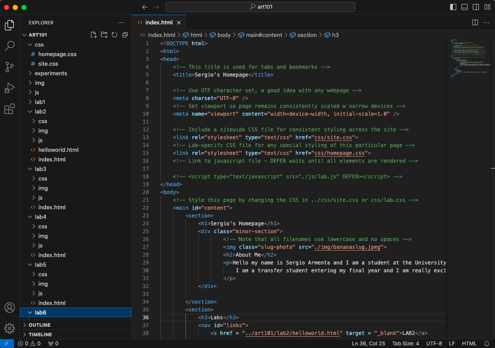
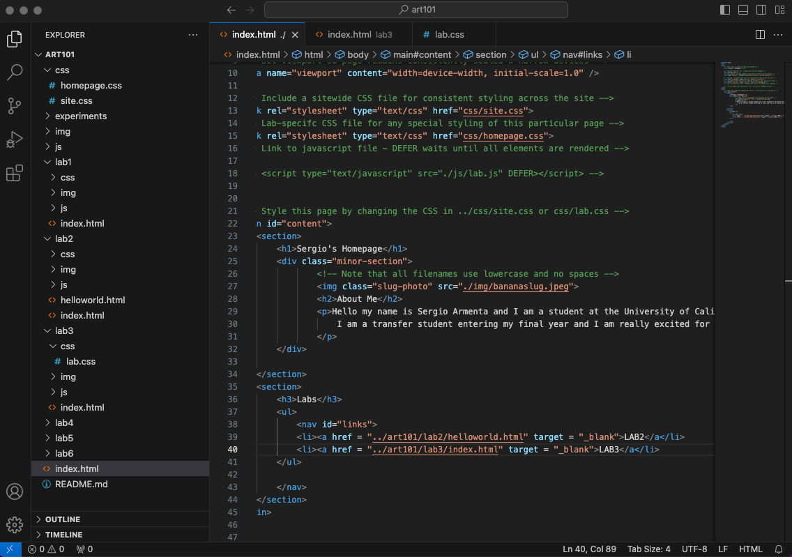
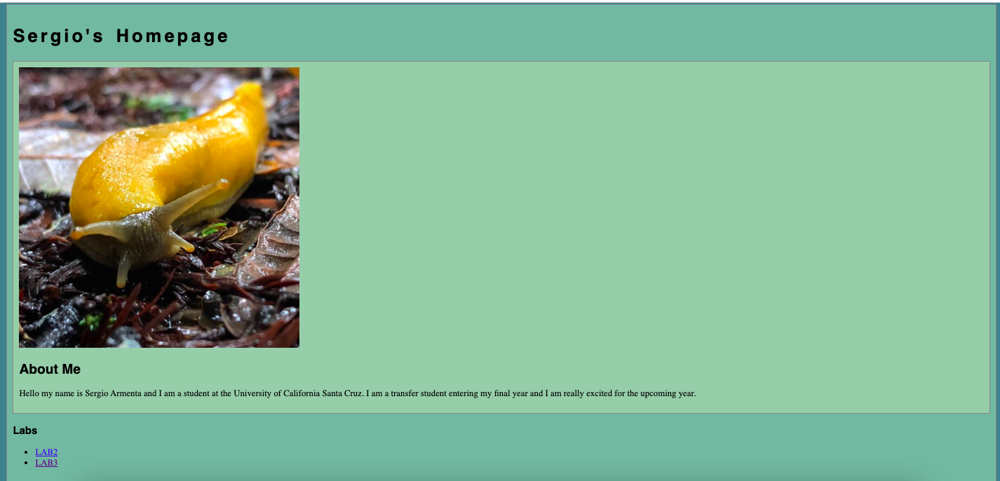
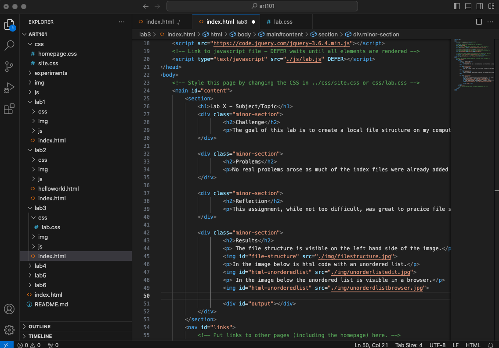
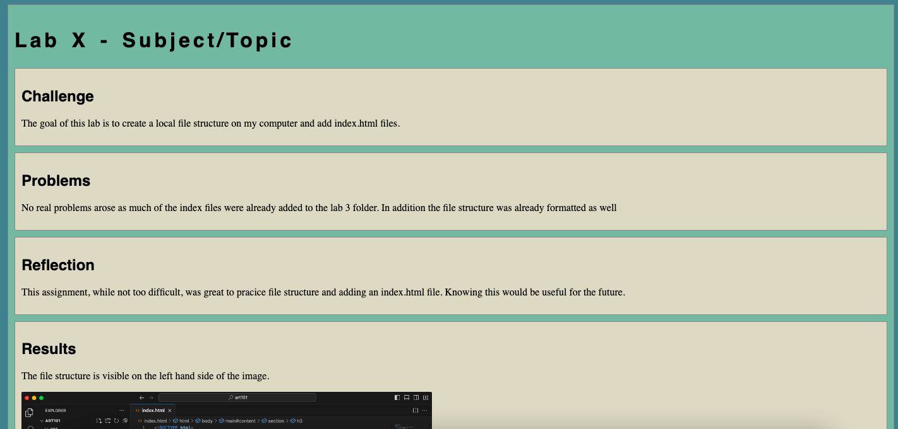

Lab X - Subject/Topic
Challenge
The goal of this lab is to create a local file structure on my computer and add index.html files.
Problems
No real problems arose as much of the index files were already added to the lab 3 folder. In addition the file structure was already formatted as well
Reflection
This assignment, while not too difficult, was great to pracice file structure and adding an index.html file. Knowing this would be useful for the future.
Results
The file structure is visible on the left hand side of the image.
In the image below is html code with an unordered list.
In the image below the unordered list is visible in a browser.
In the image below is index.html in the lab 3 folder
In the image below is index.html in browser
